感谢购买骰子游戏！无论你是来自“石器时代”还是“数字时代”，不管你是平民还是暴君，你都会爱上这个游戏的。当然，如果你觉得我的话不够权威可信，可以看看这几位罗马皇帝是怎么说的1：
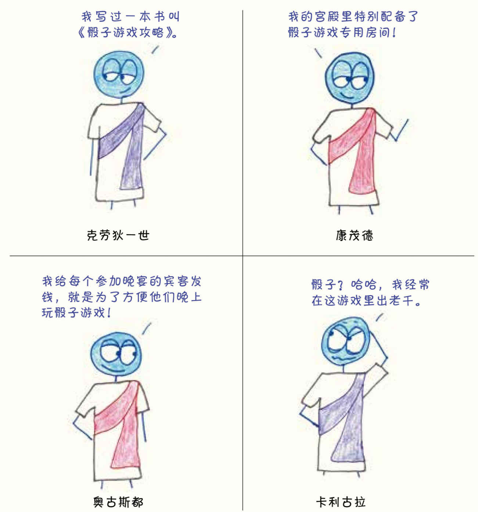
本说明书将向你介绍骰子游戏的基本规则。这是一个理论与实践并重的游戏，能锻炼人的智力和手指。开始玩吧！
游戏目标
设计一种能产生随机结果的装置，
使人类着迷和愉悦。
我们都多少了解“人”这种生物吧。人类喜欢掌控一切，所以他们发明了汽车、枪支、政府和中央空调。然而，他们也会为自己无法控制的事情而烦心，包括交通、天气、孩子和为钱参加体育比赛的名人是否成功。
在内心深处，人类始终渴望对抗命运的能力，希望可以把自己的脆弱和无力攥在手心。骰子实现了这一愿望，它让我们有了把命运掌握在自己的手上的感觉。
在自然界中，不难找到天然的骰子。公元前6000年，古美索不达米亚人投掷石头和贝壳；古希腊和古罗马人滚动羊踝骨；印第安人投掷海狸的牙齿、胡桃壳、乌鸦爪和李子核；在古印度的梵语史诗中，国王抛出坚果……这些自然界中的骰子让占卜、分配战果等神圣的仪式逐步演变成为民间的习俗。和饭后甜点或者午间小憩类似，掷骰子操作简单，却能带来立竿见影的结果，所以每个文明都发展出了独特的骰子。
如今，只有极少数的“老古董”还在用海狸的牙齿玩大富翁游戏。人类文明早已从寻找天然的骰子发展到了设计骰子。自此，骰子游戏才真正开始。
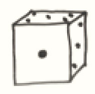
好的，现在我们要开始设计骰子了。要让大家心甘情愿地玩我们设计的骰子，骰子的每个面朝上的机会应该相等，否则其他玩家会生气地质疑我们的诚信，也不会再有人邀请我们参加西洋双陆棋派对了。
快看，有人给了我们一个提示：全等。所谓全等，就是指两个形状叠在一起时可以完全重合。全等的形状就像同卵双胞胎，它们的角和边都得完全一样。因此，对于公平的骰子，你的第一个想法可能是这样的：确保每一面都全等。
这听起来很棒……但你可能忘了，有一个形状叫扭棱锲形体（snub disphenoid）。
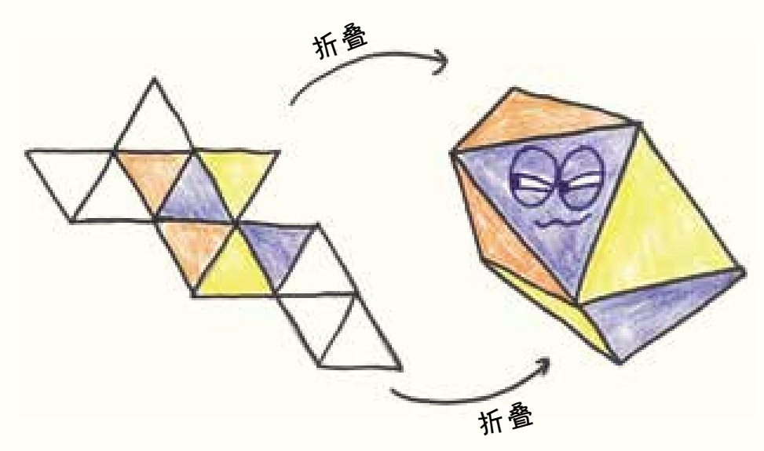
这只多面体中的长鼻子鼹鼠让我们的希望破灭了。它的12个面是完全相同的等边三角形，但它当不成公平的骰子2。在扭棱锲形体中，有的顶点连接着四个三角形，另一些顶点则连接着五个三角形。当你转动这个小怪物时，每个面朝上的概率是不同的。因此，对一个骰子来说，仅有全等的面是不够的。
我们还需要对称。
在一般语境中，“对称”是一种模糊不明却令人愉快的特性，但它的数学意义更具体些：要说一个形状具有对称性，那么这个形状应该能在进行某些几何变换后，和变换前的图形完全重合，这样的几何变换叫作对称变换。例如，一张方桌可以有8种对称变换：
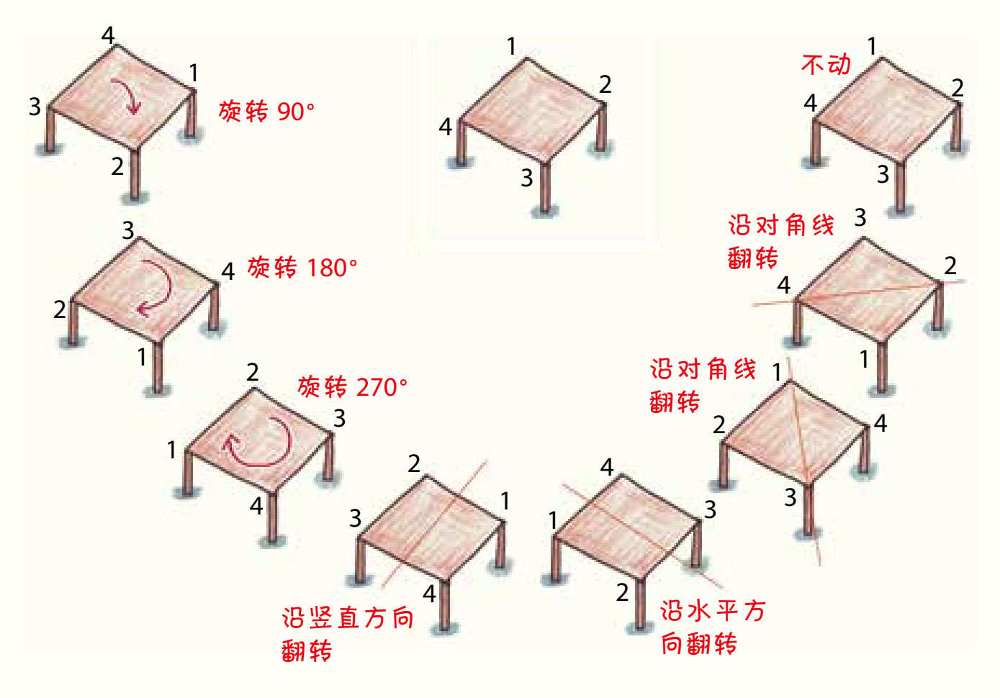
这些对称变换看起来都没有改变这张方桌，但仔细检查后我们可以发现，它们打乱了四个角的位置。例如，旋转180°互换了相对的两个顶角（角1和角3互换，角2和角4互换）。相较之下，沿对角线翻转就只是把角2和角4的位置互换了，但没有改变角1和角3的位置。骰子上的对称变换原理也大致相同：它们可以在保持整体形状不变的情况下重新排列每个面。
对称变换昭示了一条设计公平骰子的必经之路：我们要选择一个有足够对称性的形状，让每个面都可以在互相交换位置后看起来没有变化。
就拿双棱锥体来说，把两个相同的金字塔的底部粘在一起，就能得到双棱锥体，这种形状又叫双金字塔。在一定的对称变换下，每个面都可以与任何其他面交换位置，这就意味着这些面在几何上是等价的，因此这样的骰子是公平的。
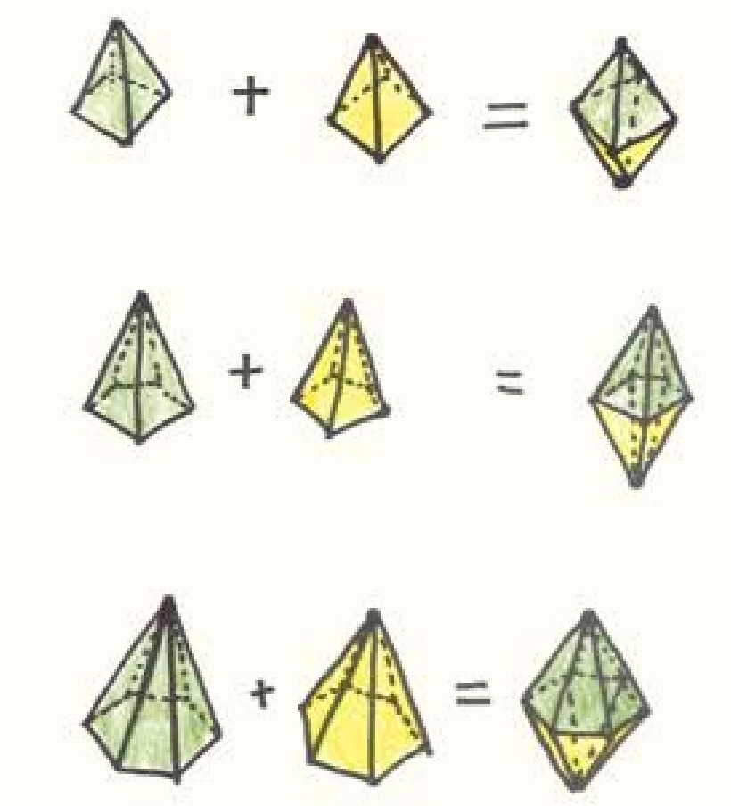
另一个例子是偏方面体（trapezohedron），它像一个在上下相接处雕花的双棱锥体，将金字塔的三角形侧面变成了有四条边的风筝形侧面。
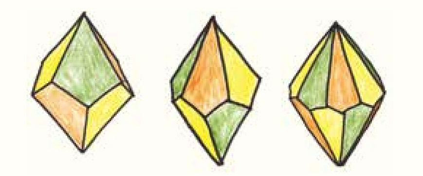
在双棱锥体或偏方面体的基础上，你可以任意地设计有偶数个面的骰子，它可以有8个面、14个面、26个面、398个面。理论上，它们都是公平的，因为每一面朝上的可能性都相等。现在，你可能认为我们已经解决了这个问题。骰子的设计就要告一段落了，对吗？
还没这么快！人们又挑出了新的毛病，骰子只保证确实公平是不够的……
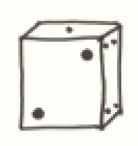
我们已经见过了几位骰子候选人，它们有如下特征：（1）形状容易定制；（2）产生的结果很公平；（3）有很酷的希腊和拉丁文学名。但是呢，这些看起来前途光明的候选人最终都在骰子的随机世界里落选了，没能成功赢得总统之位。据我所知，没有一种掷骰子的文明接纳过双棱锥体，而偏方面体呢，只在一种文化中受欢迎，那就是《龙与地下城》游戏里，这个游戏中用的十面体骰子（或者叫d10）是一个偏方面体。
人类为什么这么难伺候呢？这些形状这么公平，为什么不能用呢？
亲手掷一个双棱锥体，你就会看到问题在哪儿了——它滚不起来。双棱锥体的两个尖端使整体保持平衡，它像一个歪歪扭扭的卷纸纸筒，在上下两部分面之间来回摇晃，并且，人们没法确定它什么时候停下，说笑话时呼出的气就能把它从一面翻到另一面。用了这样的骰子，原本合家欢乐的飞行棋时光就会变成一个全家人争执不休的下午。
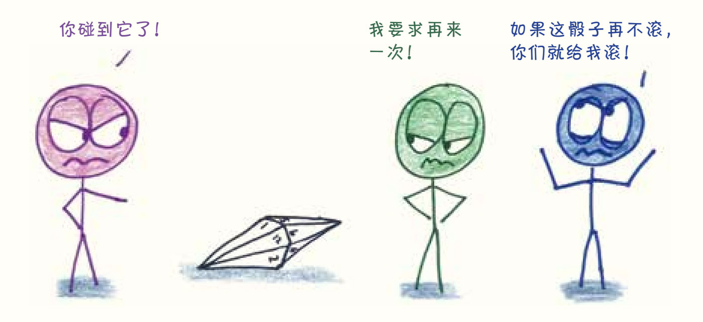
因此，要设计一个完美的骰子，仅仅让面和面对称还不够，整个形状也要完全对称。如果你喜欢研究多面体，就会立刻反应过来我说的那种形状是什么。
没错，是正多面体（Platonic solids，柏拉图立体）！
在所有的直边三维图形中，正多面体是最完美的。它们是高度对称的，任何两个面，任何两个角，任何两个边都能在对称变换下交换位置，而不改变整体形状。面对这样卓越的对称性，不论你怎么吹毛求疵，都不能怀疑它们的公平性。
世上只有五种正多面体，一种不多，一种不少。每一种正多面体都赐予了人类一种骰子。
1.正四面体：由4个等边三角形组成的金字塔形。在公元前3000年，美索不达米亚人在乌尔王族棋盘游戏中使用了正四面体作骰子，这种游戏是西洋双陆棋的前身。
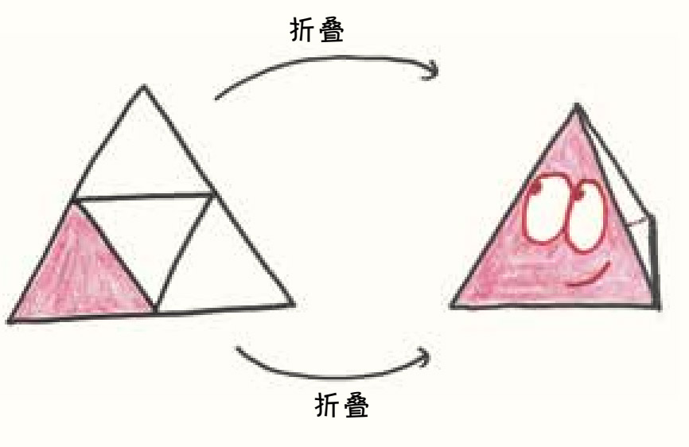
2.立方体：由6个正方形组成的棱柱。这种形状简单、坚固，而且制作方便。直到现在，它仍然是最受欢迎的骰子形状。目前发现的最古老的立方体骰子是伊拉克北部出土的陶土骰子，可以追溯到公元前2750年。
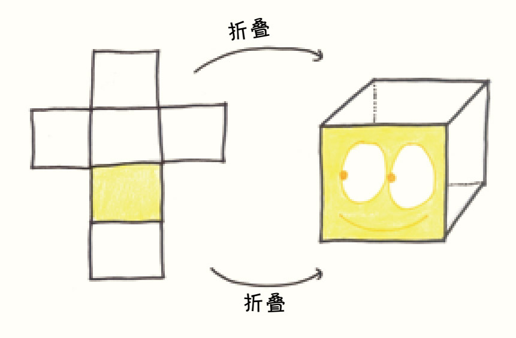
3.正八面体：由等边三角形拼成的一种特殊的双棱锥体。古埃及人会将这种骰子作为陪葬品。
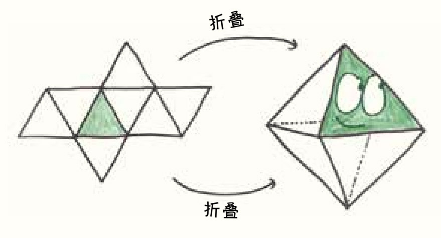
4.正十二面体：一种由12个五边形组成的、赏心悦目的宝石形多面体。在16世纪，法国人已经开始用正十二面体占卜。占星师至今仍然偏爱正十二面体，因为它的十二个面可以和黄道十二宫一一对应。
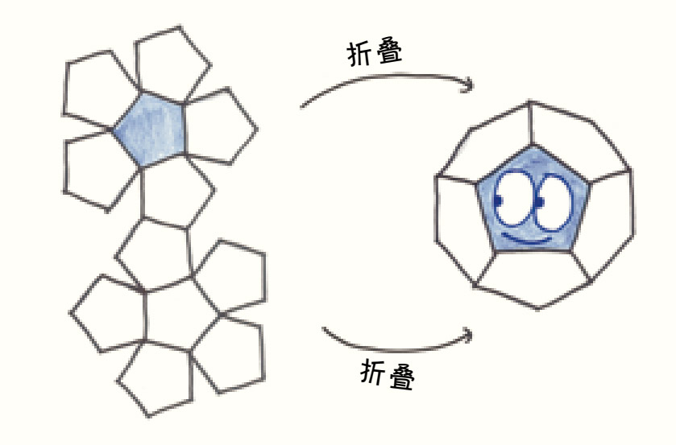
5.正二十面体：由20个等边三角形拼成的形状。虽然在游戏《龙与地下城》中随处可见，但它其实更受占卜师的青睐。比如，魔法8球（Magic 8 Balls）里面就是一种漂浮在液体中的正二十面体。如果你摇过这种球，那你肯定已经找正多面体问过自己的未来了。
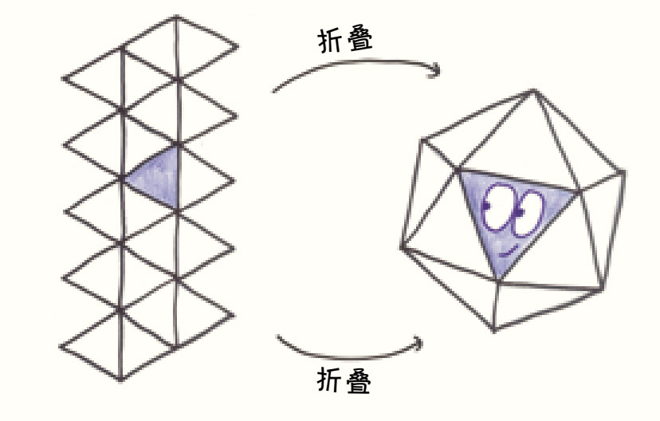
在设计骰子的游戏中，正多面体无疑是一张王牌。它们太高级了，如果没有提示，很多人都无法想象出它们的样子。可它们也是有局限性的，因为正多面体只能有4个、6个、8个、12个或20个面，所以我们的游戏只能有4个、6个、8个、12个或20个随机结果，我们没有其他结果数量的选择。
为什么不能尝试打破常规呢？有没有一个打破范式的设计，可以随机化任何数量的结果？
剧透：这比你想象的难多了。
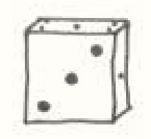
还有一种选择我们没有考虑过——“长条状的骰子”。与其担心每一面没有平等的机会出现，不如试试长条状的骰子吧。
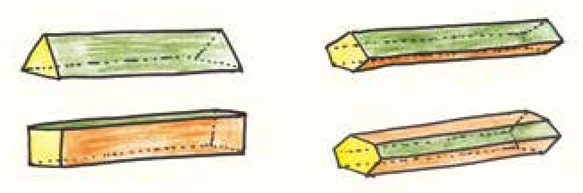
这些骰子之所以也能玩，并不是因为所有面朝上的可能性都相等，而是因为其中有两个面根本不可能朝上。长骰子玩起来公平，可以让每个数随机出现，看起来也公平，为什么它并没有流行起来呢？3
嗯……因为它们扔出去后滚得太远了。
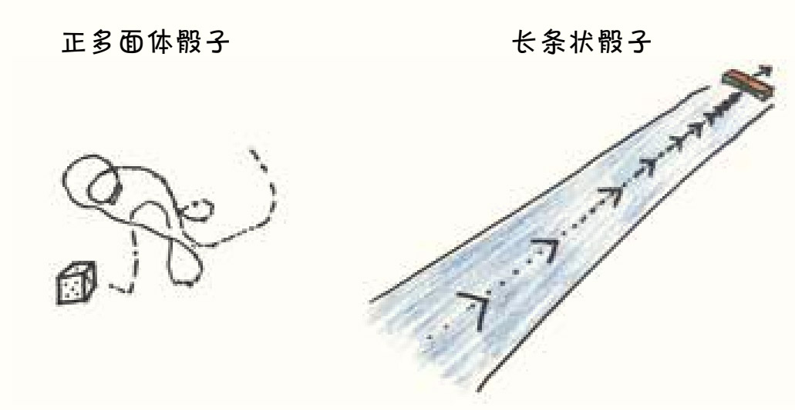
扔出正多面体时，桌面就成了它的舞池，它会欢快地跳来跳去；长条状骰子却只会朝一个方向滚动，你得给它腾出一整条保龄球道。看看，它都自负成什么样了，一个骰子还想着走红地毯？4
既然讲到了长条状骰子，那我们就顺便引入另一个数学原理：连续性5。
多扔几次长条状的骰子，你会发现两个侧面从来没有朝上过。我们缩短骰子的长度，就可以得到一个“短一点儿”的变体。它的长度越短，两个侧面朝上的可能性就越大。继续缩短，再缩短……最后你会得到一个非常短的骰子，形状接近一枚硬币。这时，投掷它的结果就会和之前完全相反，每次都是最初不会朝上的两个侧面朝上。
在长条状骰子变短的过程中，应该存在某个平衡长度。取这个长度时，骰子侧面和其他面朝上的可能性相同，这时的骰子就是一个公平的骰子。
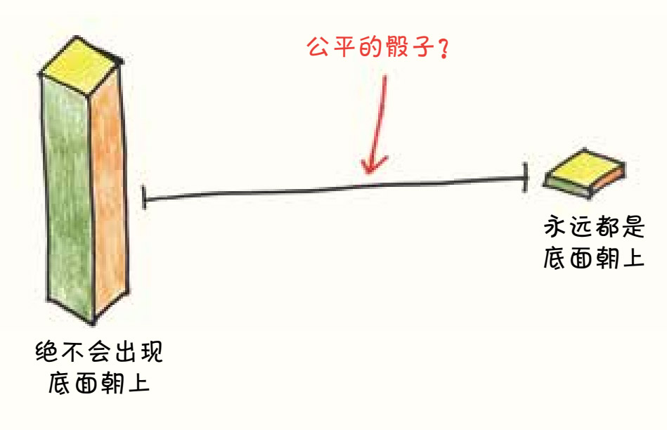
理论上，你可以在任何多面体（多棱柱）上使用这个技巧，得到既时髦又漂亮的形状。那么这些漂亮的骰子在哪儿呢？为什么桌游店不卖这种精巧又公平的骰子呢？
这是因为这样的调整太微妙了。让硬木骰子公平的长度放在花岗岩骰子上就不公平了；可以使某个尺寸的骰子公平的平衡长度可能放大到两倍后就不公平了；在某一次投掷时公平的长度，可能在不同的力度和不同的转速下，产生不公平的结果。就算只是改变非常微小的条件，你都可能会改变骰子的物理性质。这种只能在某种特定的环境中使用的骰子，对人们来说就是绣花枕头，而人们想要的是便携、耐用、随时随地都能玩的骰子。
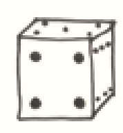
如果想在26个字母中随机选出一个，我们该用什么骰子呢？二十面体的面数不够，双棱锥体会滑稽地来回摇晃，长条状骰子会不受控制地滚向远方……它们都不能满足我们的要求。随机挑字母的任务看上去如此简单，难道就没有骰子可以完成吗？
当然有。抛五枚硬币就行了。
我们可以得到等概率的32种结果，只要在前26种结果中，为每个结果分配一个字母，再把剩下的几种结果定义为“重掷”就可以了。
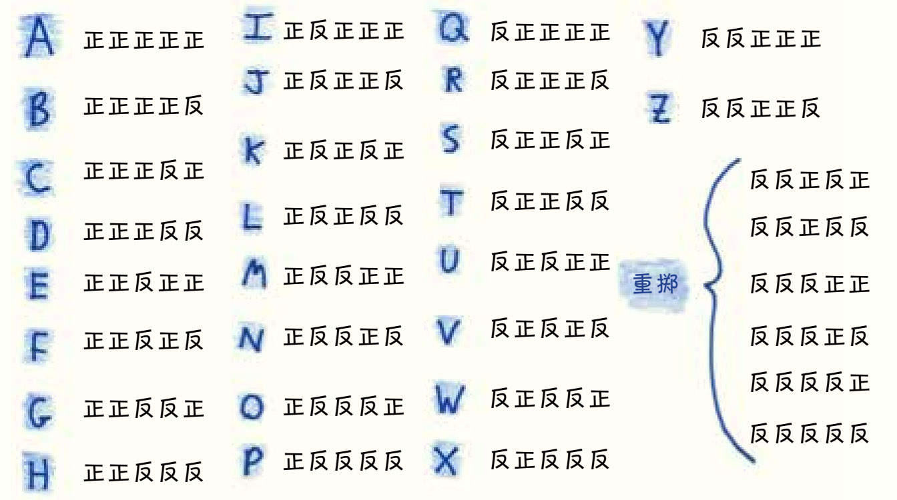
这样的过程适用于任何需要随机化的场景。比如说，我们想从《魔戒》三部曲中随便选一个单词，大约有45万个单词待选。抛19次硬币，我们可能得到的结果有50多万个，给每种结果指定一个单词就好。如果得到了一个未分配的结果，你只需再把19枚硬币重新抛一次。
对了，其实也不需要准备19枚硬币，把一枚硬币抛19次也是可以的。
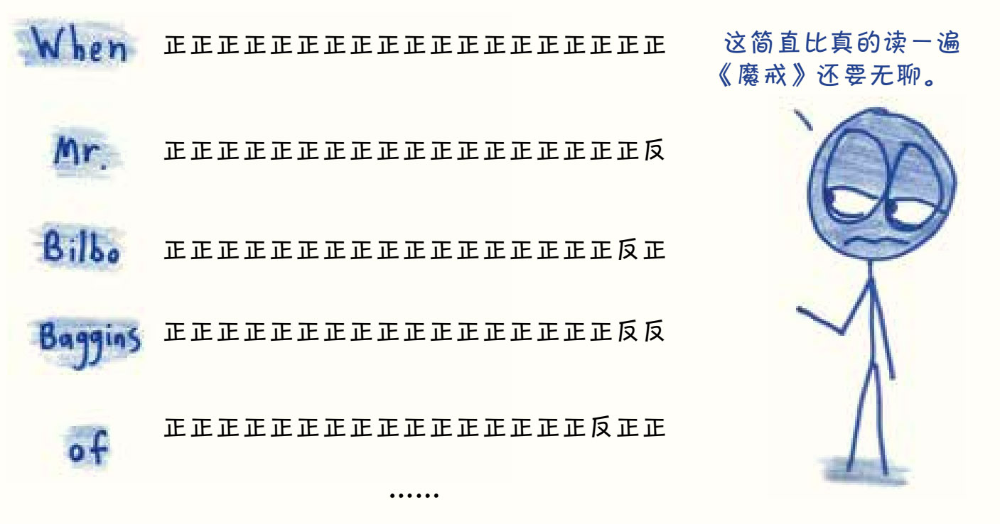
按照这种逻辑，没有一种骰子游戏是一枚硬币不能替代的。然而，如果赌场只有用抛硬币定输赢的赌桌或轮盘游戏，拉斯维加斯就不可能吸引成千上万的游客了。
用硬币替代骰子游戏的弊端很明显：这些系统太复杂了。要记录掷硬币的顺序，在索引中查找结果，如果抛到了“重掷”还可能要重复整个过程，这太麻烦了。人们希望扔一次骰子就能得到结果，希望不浪费骰子的每一个面，不希望玩的时候还要时不时地翻查用户手册。
这些需求否决了上述简洁的数学技巧。比方说，如果想从四个结果中得到一个随机的选择，你可以掷一个简单的立方体骰子，只要给其中两个面贴上“重掷”的标签就可以了。但这种方法让人很纠结，浪费了两个面总归让人觉得没有物尽其用。6你和四个朋友一起吃蛋糕时，总不可能先把蛋糕切成六块，然后再扔掉另外一块吧？
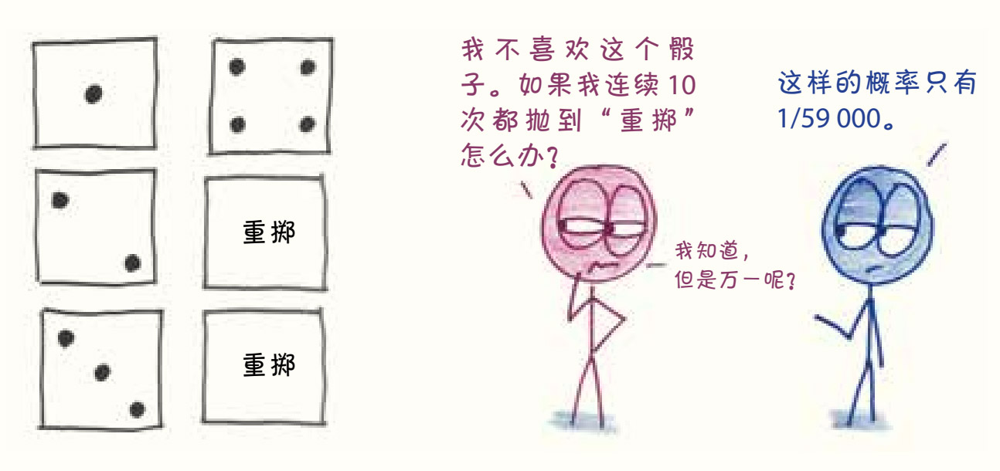
我猜这就是《龙与地下城》的玩家选择四面骰的原因，他们实在是走投无路了。在所有的正多面体中，四面体是最不受欢迎的骰子。其中的原因也很简单：它落地时顶角朝上，面朝下。这样掷骰子的感觉怪怪的，骰子落地后，还要拿起来看看底部的数字——那才是投掷出来的结果。但他们还是选择了它。
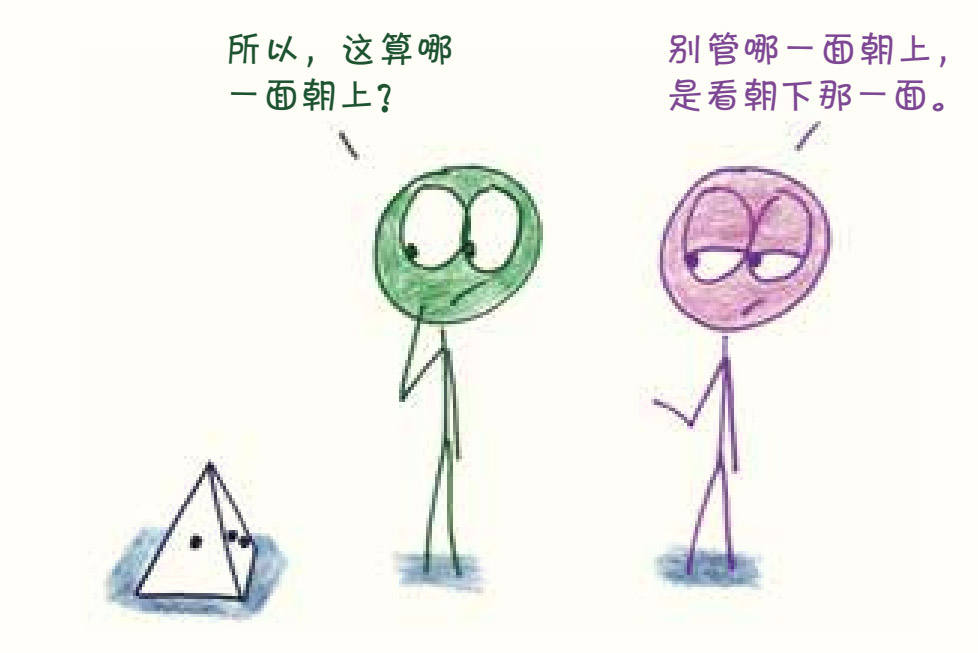
在骰子游戏长达几千年的历史中，回避四面体骰子的同时，人类一直倾向于选择具有平行相反面的形状，也就是希望每个“朝下”的面都对应着一个“朝上”的面。数学才不在乎这些细节呢，但作为投掷骰子的玩家，人类当然更注重用户体验。
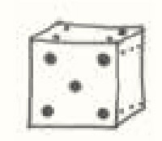
还记得设计骰子的初衷吗？骰子使人类接触到更高的力量——随机的机遇、命运的安排、神明的意志。投掷骰子的过程可以为我们在头脑风暴中做出决定，选中游戏里的幸运儿，给我们占卜和算命。
当然，也会有人惦记着作弊。7
作弊方法一：在骰子外部动手脚。这主要是指对骰子的外部形状进行一些不易被人发现的改动，让它变成异型。如果在某个面上制造轻微凸起，就能使其变重，不太可能朝上；在某个面上制造轻微凹痕，就能使其变轻，更有可能朝上；也可以用有弹性的材料覆盖住某个面或用砂纸磨平某个面，这样抛掷时这些面更容易朝上了。不过，这些把戏都已经过时了，在庞贝古城的遗迹中，人们早就挖掘出了边角被打磨过的作弊骰子。
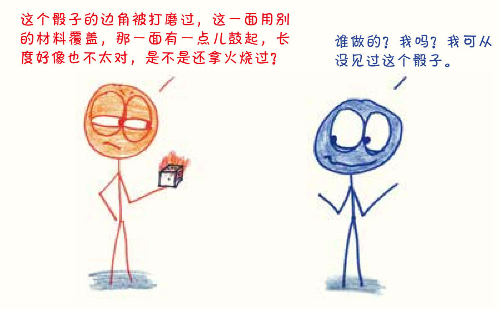
作弊方法二：在骰子内部动手脚。这种骰子的“陷阱”藏在内部的两个空槽里，那里装了水银。只要在扔的时候讲究些技巧，就可以把水银从一个空槽转移到另一个空槽，从而改变某个投掷结果出现的概率（如果你害怕有毒的金属，用熔点比体温稍低的蜡也能达到这个效果）。在木骰子流行的时期，还有另一个类似的办法。一些骗子在种树时会将小石子嵌入树枝中，小树长大后石子会被包裹在树枝内部，这时他们再砍下树枝，把嵌有小石子的木头做成骰子，用木头内部看不见的小石子改变骰子的重量分布。这个行骗方法不仅需要非凡的耐心，还要有超乎寻常的植物学知识。
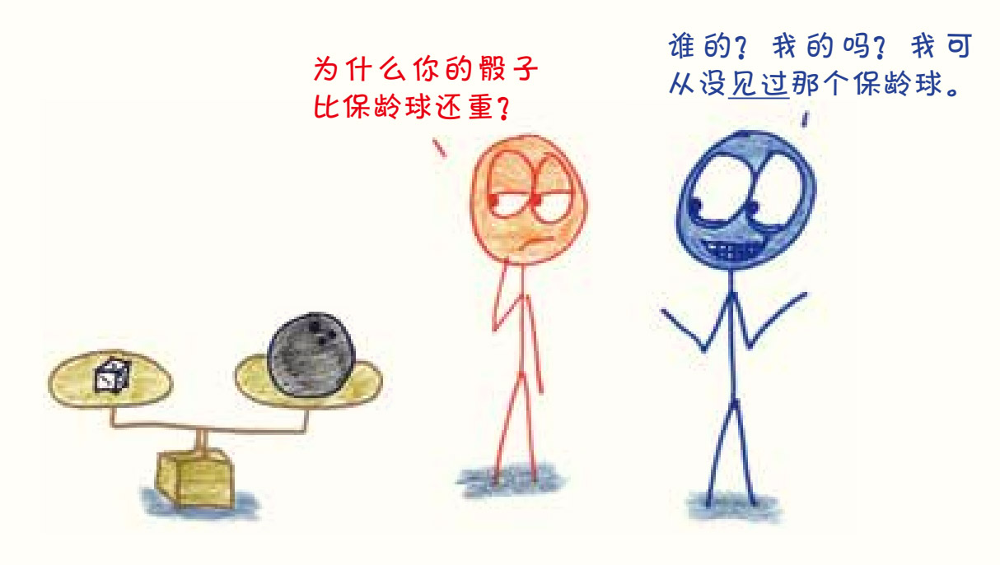
作弊方法三：重新编号8。一个正常的立方体骰子每一组相反面的数字之和都是7，这三组相反面上的数字对分别是1和6，2和5，3和4。但在做了手脚的骰子中，有些数字会出现不止一次，例如骗子可能会把三组相反面上的数字对改成6和6、5和5、4和4。因为从任何角度，受骗者都只能看到立方体的三个面，所以如果不是特别留意的话，这种骗术也不容易被揭穿9。
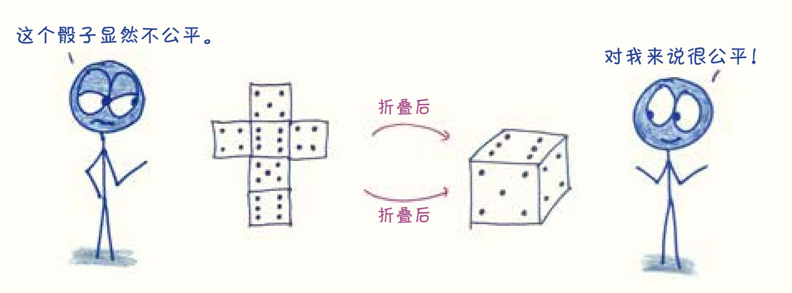
虽然所有这些作弊方法都以立方体骰子为目标，但这并非因为在立方体上特别容易作弊，它们不过是应用范围最广罢了，在赌桌上尤其常见。不用说，在赌场上能骗到的钱比在《龙与地下城》里的要多得多。
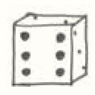
骰子游戏和大多数游戏一样，没有真正的作用。毕竟我们现在可是生活在21世纪，我开喷气背包去上班，乘空中飞车度假——好吧，夸张了一点儿。但我包里有一台笔记本电脑，里面可以装下半个世界。飞速发展的技术正在淘汰一切，骰子作为一种落后的求随机结果的方式也不例外。现在，打开电脑，我要在Microsoft Excel中模拟扔100万次立方体骰子的情况，让我们一起看看需要多长时间。
完成了，大概花了75秒。结果如下：
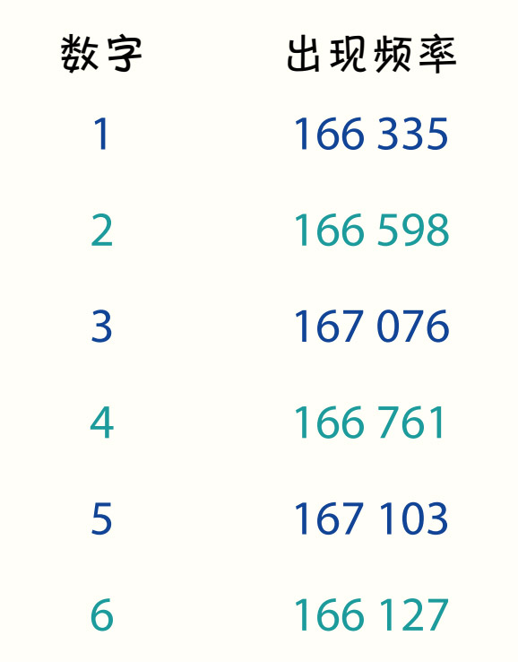
用计算机求随机数比在桌子上扔一个塑料立方体更快、更容易，而且更能保证随机性。在未来的某一天，也许赌场会淘汰赌桌和轮盘赌轮，而它们的数字替代品将比老式的赌博游戏机运算更快、更准确。
可是如果真的这样，玩游戏还有什么乐趣呢？
骰子是要拿在手上玩的。我第一次玩《龙与地下城》的时候（好吧，也是唯一一次），我遇到了比游戏中任何兽人和法师都更吸引人的东西：佐基体（Zocchihedron）——一个有100面的骰子。你能想象吗？100面！一个骰子要滚动30秒后才会停下来！我当然知道，投两次10面体骰子（一次的结果代表十位数，一次的结果代表个位数）会比卢·佐基（Lou Zocchi）那颗像高尔夫球一样粗糙的骰子更快、更公平。但我不在乎，我就想扔一个100面的10。
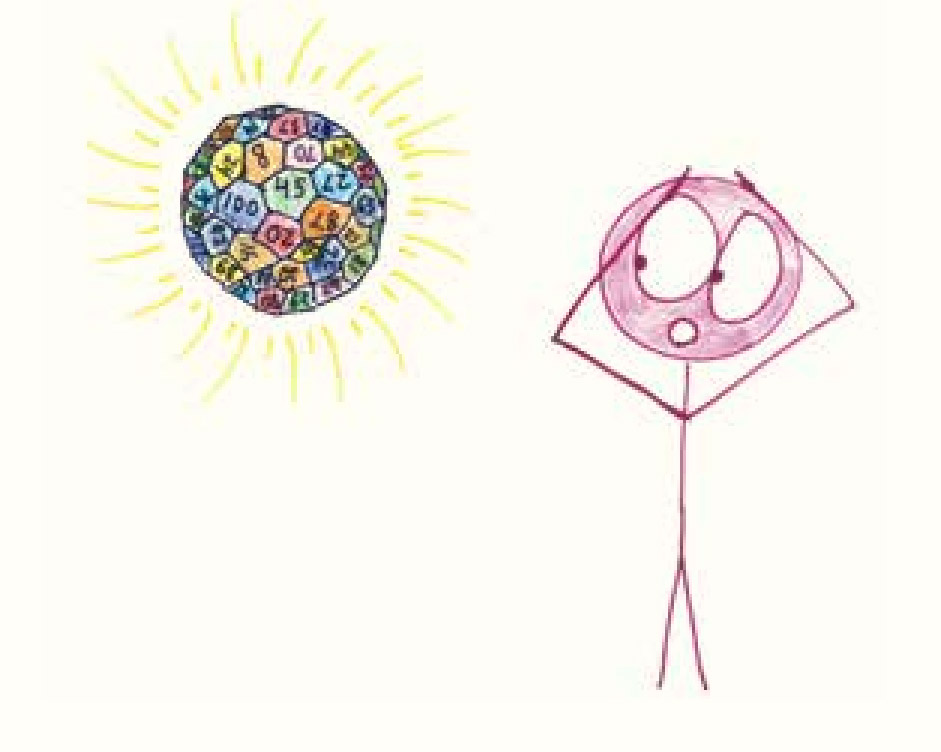
希腊人在投掷被他们称为“astragalos”的羊踝骨时一定也有同样的感觉。他们用四个没什么规律的数字（1、3、4和6）给它的四个面赋值，然后一把扔出。如果扔四次得到的数字全是1，那占卜结果就是“狗”，是最糟糕的结果。最好的结果是“阿佛洛狄忒”，有的人认为“阿佛洛狄忒”意味着扔四次得到的数字全是6，有的人则认为“阿佛洛狄忒”指的是四个数字轮流出现一次。这种羊拐骰子并不公平，但它的象征意义比公平更重要。它预示着人们手中掌握的命运。当尤利乌斯·恺撒跨过卢比孔河，终结罗马共和国，将历史的进程推向帝国的黎明时，他的指示是“Alea iacta est”——“骰子已经掷出了”。
我想，骰子游戏会永远存在下去，它能让我们听见自己内心深处的声音。只要记住下面这六条规则就好：
好的骰子玩起来是公平的。
好的骰子看起来是公平的。
好的骰子随时随地都能玩。
好的骰子玩起来不累。
好的骰子不易作弊。
好的骰子玩起来有意思。